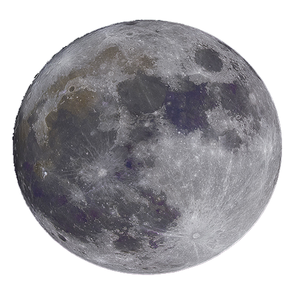

O nome do autor é Thomas Weibenfalk, um desenvolvedor da Suécia. Ele cria regularmente tutoriais gratuitos no canal dele no YouTube. Ele também tem alguns cursos premium sobre React e Gatsby. Visite-o em um desses links: